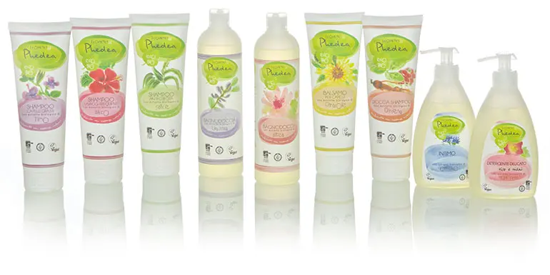
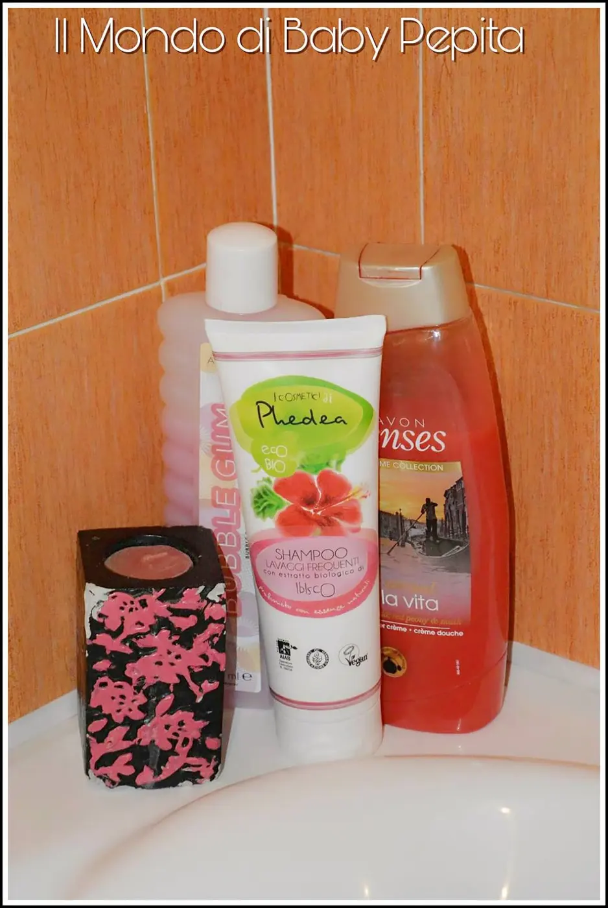
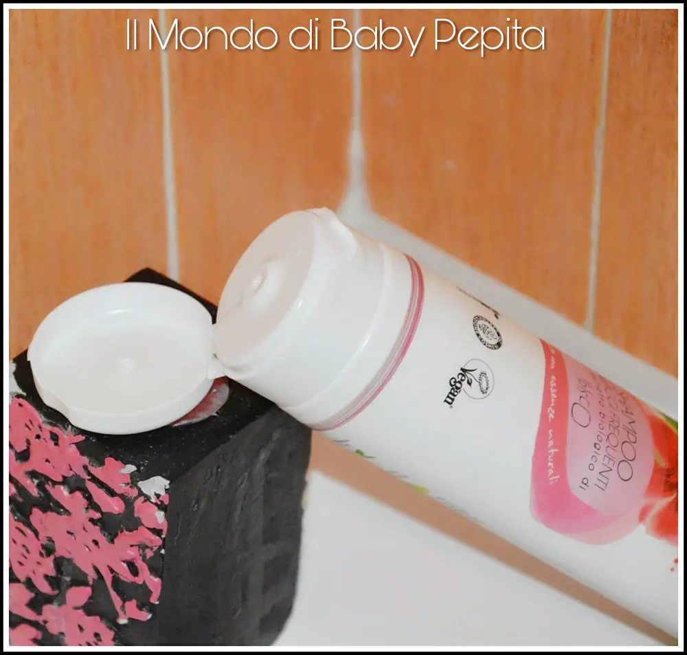

I cosmetici Phedea - Pierpaoli (cosmesi)

Cosmesi: Oggi ho il piacere di ospitare sul mio blog un altro alleato di bellezza. Parliamo di Pierpaoli s.r.l.
È un'azienda che si occupa di accompagnare i gesti quotidiani di ogni persona; la cura del corpo e la detergenza della casa.Quindi richiama un pò ogni aspetto di benessere e igiene personale e dell'ambiente in cui viviamo. La Pierpaoli s.r.l. produce diverse linee. Tra cui: Pierpaoli Sensè, Ecosì Persona, Folia, Ecosì, Talybe, NeBiolina, Biocontè, Phedea, Anthyllis, Baby Anthyllis, Ekos, Natura Bella, Natura Bella Baby, Ekos personal care, Ekos personal care baby. Io ho avuto il piacere di provare e quindi osservare da vicino l'efficacia di un prodotto di una delle tante linee che trattano; ovvero Phedea.

I cosmetici Phedea è un marchio totalmente bio. Una linea ricca di preziosi estratti da agricoltura biologia d profumata esclusivamente con essenze naturali.
Lo shampoo che ho provato è uno shampoo per lavaggi frequenti con proteine ed estratti Bolognini di ibisco.

Indicato per ogni tipo di capelli ma consigliato anche per capelli sfibrati e danneggiati.
Lascia i capelli morbidi e idratati ed anche con un buon profumo a base di estratto di fiore di ibisco.
La linea Phedea è arricchita da acqua biologica da steli d'orzo, proteina, vitamine e minerali quindi adatto a pelli sensibili e facilmente irritabili.

È un flacone abbastanza grande infatti ha 250ml di prodotto all'interno.
Non fa molta schiuma, ha una profumazione delicata e piacevole.
Di conseguenza è un piacevole massaggio per la cute tutte le volte.
INCI: Aqua (Water), Cocamidopropyl Betaine, Sodium Lauroyl Sarcosinate, Hordeum Vulgare (Barley) Stem Water*, Caprylyl/Capryl Glucoside, Lauryl Glucoside, Sodium Chloride, Lactic Acid, Hibiscus Sabdariffa Flower Extract*, Hydrolyzed Rice Protein, Coco-Glucoside, Glyceryl Oleate, Sodium Benzoate, Parfum (Fragrance)**, Glycerin, Potassium Sorbate, Limonene. *Da Agricoltura Biologica**A base di Essenze NaturaliPrezzo: intorno ai 5,00 €
Ovviamente questo shampoo è solo uno della linea I cosmetici phedea.
Ha prodotto anche shampoo per forfora, balsamo, doccia shampoo, detergente intimo, detergente delicato, bagnoschiuma ecc ecc.
Sono facilmente reperibili nei supermercati dove solitamente facciamo spesa e possiamo trovare facilmente prodotti di cosmesi.
Per saperne di più su tutte le linee Pierpaoli s.r.l. visitate il